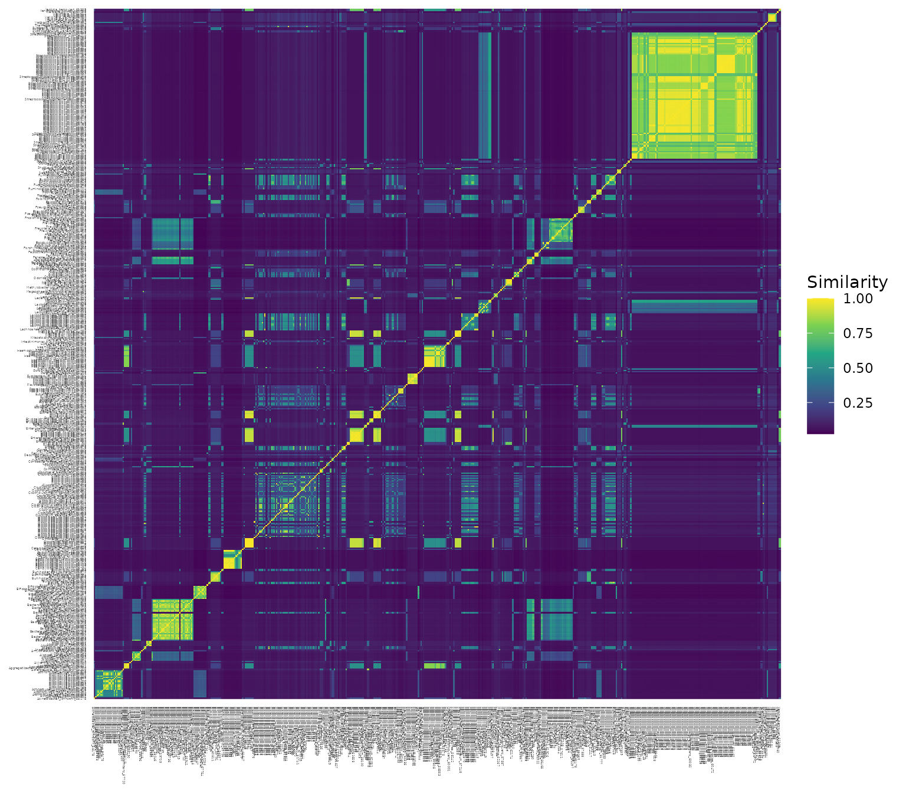
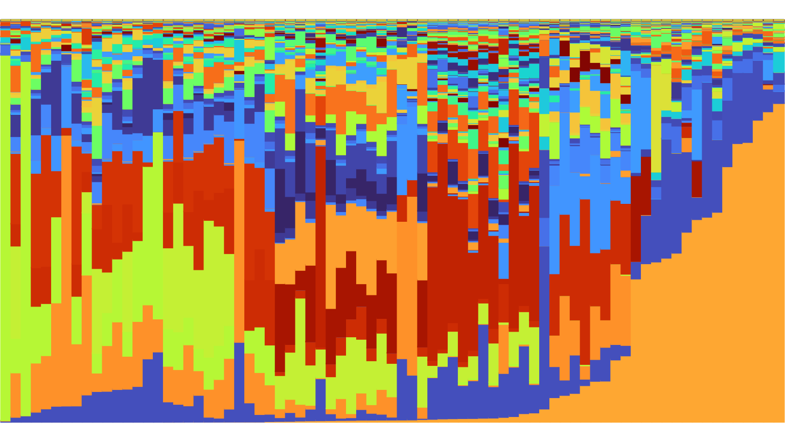
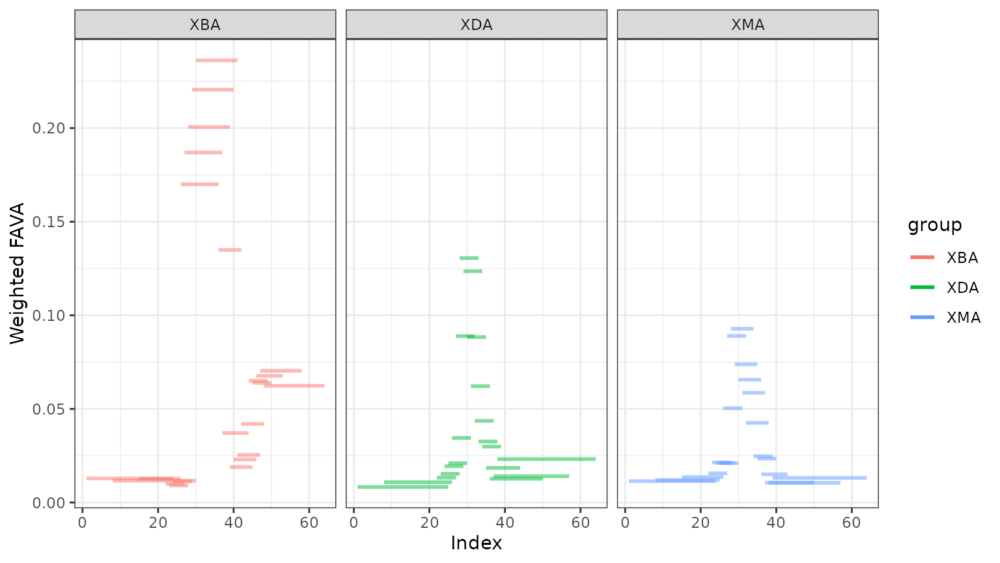
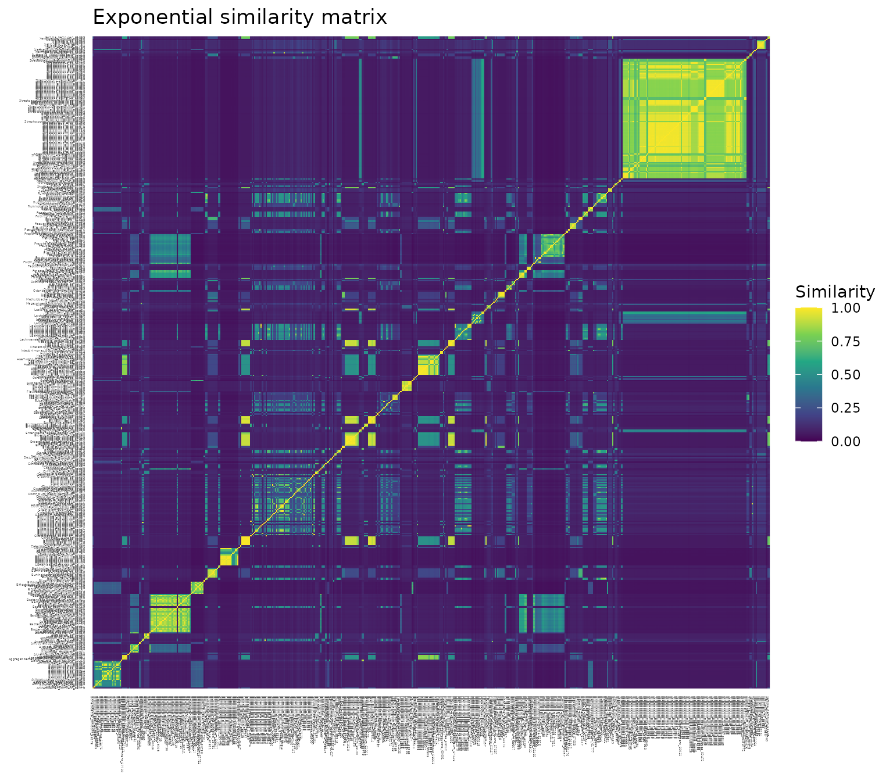
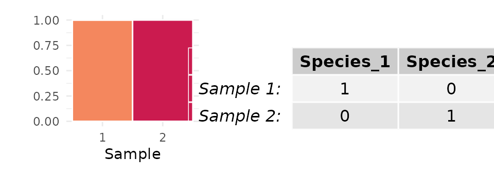

Analysis of microbiome data with FAVA
Maike Morrison
March 27, 2025
Source:vignettes/microbiome_tutorial.Rmd
microbiome_tutorial.RmdIntroduction
The FAVA R package implements the statistic FAVA, an -based Assessment of Variability across vectors of relative Abundances, as well as a suite of helper functions which enable the visualization and statistical analysis of relative abundance data. The FAVA R package accompanies the paper, “Quantifying compositional variability in microbial communities with FAVA” by Maike Morrison, Katherine Xue, and Noah Rosenberg. This tutorial provides a guide to the usage of the FAVA R package for the analysis of microbiome data.
The FAVA R package includes the following core functions:
fava: Compute FAVA across the rows of a relative abundance matrixplot_relabund: Visualize a relative abundance matrix as a stacked bar plot
-
window_fava: Compute FAVA in sliding windows across the rows of a relative abundance matrix
The statistic FAVA summarizes the variability across the rows of a relative abundance matrix in a single index that ranges from 0 to 1. For typical microbiome data, the rows of each matrix represent microbiome samples and the entries of each row represent the relative abundance of a taxonomic category (e.g., OTU, species, or genus) or a functional category (e.g., CAZyme or gene ortholog). Such matrices are often referred to as “OTU tables,” and are usually inferred from 16S or metagenomic sequencing data. You must obtain these relative abundances from your sequencing data before using the R package FAVA.
FAVA can be used to quantify variability in many different contexts. For example,
If each row corresponds to a time point, FAVA represents the temporal stability of the community.
If each row corresponds to a spatial sampling location, FAVA represents the spatial heterogeneity of the community.
If each row corresponds to a replicate in a community assembly experiment, FAVA represents the repeatability of the community assembly.
If each row represents a distinct individual, FAVA represents the inter-individual variability in microbiome composition.
Overview
In this tutorial, we will explain the data required to use the FAVA R package (Data specifications). We will then analyze example data from Xue et al. (2024) (Example Analysis). With this data set and the FAVA R package, we visualize the microbiome composition of three subjects over time, use FAVA to quantify the temporal variability across these microbiome samples, and explore these dynamics at a finer resolution using sliding windows over time.
Data specifications
To use FAVA, your data must be in the form of a matrix, data
frame, or tibble with rows corresponding to samples and columns
corresponding to categories such as bacterial species. If metadata
(e.g., sample ID, time point, subject, experimental condition,
replicate, etc.) are included, these columns must be on the left-hand
side of the matrix, while the categories comprising the composition of
the sample (e.g., bacterial species) must be on the right-hand side of
the matrix. If your matrix contains metadata, you must specify
K, the number of categories. While these categories can
represent many things, we will for simplicity use “species” in this
document to refer to the categories comprising each relative abundance
sample.
Your matrix may contain samples from multiple groups you would like
to analyze separately. In this case, you must provide the name of the
column specifying the group each sample belongs to as the
group parameter. For example, to quantify variability
across all samples from each experiment in the matrix pictured below, we
would specify group = "Experiment". You can also group by
multiple columns by providing a vector of column names. For example, if
your data had columns var1 and var2 you wished
to group by, you would specify group = c("var1", "var2").
See the section Compute unweighted
FAVA with multiple groups for details.
You can read your data into R using a function such as
read.csv. If you use phyloseq, you can simply
extract and transpose (pivot) the OTU table. phyloseq users may
also wish to join their OTU table with their sample data table. Sample
code for these tasks is provided below. You may also want to confirm
that the right
rows of your matrix each sum to 1.
# Example code to read in a data set
my_data = read.csv("Path_to/my_data.csv")
# If your relative abundances are in a phyloseq object,
# make one object combining the sample data (left-hand side)
# and the OTU relative abundances (right-hand side)
my_data = FAVA::relab_phyloseq(phyloseq_object)
# Confirm that your samples each sum to 1
# if columns 4 through 10 contain the relevant categories
# and columns 1, 2, and 3 contain metadata
rowSums(my_data[,c(4:10)])
# Example code to convert counts to relative abundances
my_data[,c(4:10)] = my_data[,c(4:10)]/rowSums(my_data[,c(4:10)])Optional: species similarity matrix
In order to compute a version of the FAVA variability statistic that accounts for the phylogenetic similarity between species, you must provide a phylogenetic similarity matrix, . Such a matrix can be generated from species sequence data via the four steps outlined below. We include example code to generate a similarity matrix from a phyloseq object. This process is discussed at greater length in a supplement to this tutorial, Generating a similarity matrix.
Generate a phylogenetic tree describing the relationships among the species present in your samples. There are many platforms for such analysis, such as this workflow using DADA2.
Convert the phylogenetic tree to a distance matrix. Phylogenetic tree objects can be easily converted to distance matrices using functions such as
cophenetic.phyloin the ape R package. If is the phylogenetic distance matrix, entry represents the phylogenetic distance between species and species .Convert the phylogenetic distance matrix to a similarity matrix. Whereas the distance between two identical species is 0, the similarity between two identical species is 1. We therefore use a simple transformation to convert the distance between species and , , to the similarity between species and , , mapping distances of 0 to similarities of 1. For the example analysis in this tutorial and in the accompanying paper, we use the transformation . Other transformations, such as or , are also suitable but result in a different mean similarity across species. The choice of transformation is discussed at length in a supplement to this tutorial, Generating a similarity matrix.
Ensure that the order and identity of the species in the similarity matrix match the order and identity of the species in your relative abundance matrix.
# (1)
# Here, we assume that you have already generated a phylogenetic tree
# and that it is a part of your phyloseq object.
tree = phy_tree(phyloseq_object)
# (2)
distance_matrix = ape::cophenetic.phylo(tree)
# (3)
# alternative similarity matrices:
similarity_matrix = 1/(distance_matrix + 1)
similarity_matrix = 1 - distance_matrix/max(distance_matrix)
# the similarity matrix we use:
similarity_matrix = exp(-distance_matrix)
# (4)
# Get the names of the species in your relative abundance matrix
species_order = colnames(my_data[,c(4:10)])
# Confirm that the entries of the similarity matrix
# correspond to relative abundance matrix
all(species_order == colnames(similarity_matrix))
all(species_order == rownames(similarity_matrix))
# If they do not, you can re-order the rows and columns of
# your similarity matrix to match your data:
similarity_matrix_reordered = similarity_matrix[species_order, species_order]
# confirm that all diagonal elements are still 1
diag(similarity_matrix_reordered)Having generated a properly formatted relative abundance matrix, and possibly a species similarity matrix as well, it’s time to use FAVA!
Example analysis
As a guide for the application of FAVA to microbiome data, we demonstrate each of the package’s core functions using example data generated by Xue et al. (2024). This data set contains time series microbiome samples from three human subjects who each took an antibiotic midway through the study period (0 - Example data). We first visualize the composition of these subject’s microbiome communities over time (1 - Visualize relative abundances). For each subject, we next compute the total variability across the study period (2 - Compute unweighted FAVA and 3 - Compute weighted FAVA). We also estimate the uncertainty in these variability measures, which allows us to perform statistical comparisons of each subject’s temporal microbiome variability (4 - Bootstrapping). Finally, we explore how compositional variability changes over time using a sliding window analysis (5 - Sliding windows).
0 - Example data
In this tutorial, we analyze longitudinal microbiome composition data
generated by Xue et
al. (2024), data that is also analyzed in the paper by Morrison et
al. For example analyses, a subset of this data is provided under the
name xue_microbiome_sample in the FAVA R package.
xue_microbiome_sample contains the relative abundances of
bacterial species in samples from three subjects: XBA, XDA, and XMA.
Each subject collected weekly samples for four weeks before and after a
three week window of daily sampling, the middle of which contained a
one-week antibiotic course (depicted below; dots correspond to sampling
days, yellow dots correspond to sampling days coinciding with the
antibiotic).
Each row of xue_microbiome_sample represents a single
microbiome sample. xue_microbiome_sample has 526
columns:
subject: the subject each sample corresponds totimepoint: the study day when each sample was collectedActinomyces_sp_58647, …,Xenorhabdus_bovienii_57960: the relative abundance of the corresponding bacterial species (there are 524 species in total)
You can explore the structure of this data using the following functions:
# open the data set in a new window
View(xue_microbiome_sample)
# view the structure of the data set
str(xue_microbiome_sample)xue_microbiome_sample:
| subject | timepoint | Actinomyces_sp_58647 | Actinomyces_sp_59161 | Actinomyces_sp_59944 | Aggregatibacter_aphrophilus_58143 | Alistipes_finegoldii_56071 | Anaerostipes_hadrus_55206 | Bacteroides_acidifaciens_59693 | Bacteroides_caccae_53434 | Bacteroides_cellulosilyticus_58046 | Bacteroides_clarus_62282 | Bacteroides_faecis_58503 | Bacteroides_finegoldii_57739 | Bacteroides_fluxus_62283 | Bacteroides_fragilis_54507 | Bacteroides_graminisolvens_48736 | Bacteroides_intestinalis_61596 | Bacteroides_massiliensis_44749 | Bacteroides_nordii_55557 |
|---|---|---|---|---|---|---|---|---|---|---|---|---|---|---|---|---|---|---|---|
| XBA | 1 | 3.00e-05 | 1.95e-05 | 0.0000402 | 0.0000932 | 0.0105169 | 0.0047967 | 0.0005821 | 0.0000417 | 0.0490133 | 1.04e-05 | 0.1053265 | 0.0345826 | 7.2e-06 | 0.0030965 | 2.65e-05 | 0.0017469 | 0.0000383 | 9.8e-06 |
| XBA | 8 | 0.00e+00 | 0.00e+00 | 0.0000000 | 0.0000000 | 0.0238779 | 0.0062339 | 0.0008724 | 0.0000121 | 0.0563169 | 0.00e+00 | 0.0642161 | 0.0303697 | 0.0e+00 | 0.0050509 | 0.00e+00 | 0.0023815 | 0.0000000 | 0.0e+00 |
| XBA | 15 | 0.00e+00 | 0.00e+00 | 0.0000000 | 0.0000000 | 0.0792188 | 0.0135462 | 0.0013047 | 0.0000689 | 0.1457363 | 0.00e+00 | 0.0491287 | 0.0133849 | 0.0e+00 | 0.0052595 | 0.00e+00 | 0.0059996 | 0.0000000 | 0.0e+00 |
| XBA | 22 | 0.00e+00 | 0.00e+00 | 0.0000000 | 0.0000000 | 0.0371471 | 0.0050842 | 0.0016665 | 0.0001235 | 0.2189861 | 0.00e+00 | 0.1006940 | 0.0119472 | 0.0e+00 | 0.0019313 | 0.00e+00 | 0.0078913 | 0.0001656 | 0.0e+00 |
| XBA | 23 | 0.00e+00 | 0.00e+00 | 0.0000000 | 0.0000000 | 0.0421698 | 0.0035287 | 0.0011471 | 0.0000000 | 0.1506156 | 6.55e-05 | 0.0867622 | 0.0079372 | 0.0e+00 | 0.0021749 | 0.00e+00 | 0.0066130 | 0.0002462 | 0.0e+00 |
| XBA | 24 | 4.30e-05 | 0.00e+00 | 0.0000000 | 0.0000000 | 0.0455694 | 0.0011405 | 0.0011890 | 0.0000000 | 0.1668561 | 1.66e-05 | 0.0960336 | 0.0157613 | 0.0e+00 | 0.0066761 | 0.00e+00 | 0.0071822 | 0.0001485 | 0.0e+00 |
| XBA | 25 | 0.00e+00 | 0.00e+00 | 0.0000000 | 0.0000513 | 0.0215852 | 0.0029459 | 0.0004581 | 0.0000524 | 0.1380022 | 0.00e+00 | 0.0737215 | 0.0035850 | 0.0e+00 | 0.0039929 | 0.00e+00 | 0.0054444 | 0.0000470 | 0.0e+00 |
| XBA | 26 | 0.00e+00 | 0.00e+00 | 0.0000555 | 0.0000000 | 0.0265527 | 0.0040331 | 0.0002825 | 0.0000000 | 0.1328648 | 0.00e+00 | 0.0764246 | 0.0036098 | 0.0e+00 | 0.0050594 | 0.00e+00 | 0.0054381 | 0.0000000 | 0.0e+00 |
| XBA | 27 | 0.00e+00 | 0.00e+00 | 0.0000000 | 0.0000000 | 0.0336038 | 0.0031125 | 0.0009802 | 0.0002095 | 0.1993128 | 0.00e+00 | 0.0898991 | 0.0098039 | 0.0e+00 | 0.0053260 | 0.00e+00 | 0.0078840 | 0.0000000 | 0.0e+00 |
| XBA | 28 | 0.00e+00 | 0.00e+00 | 0.0000000 | 0.0000000 | 0.0519917 | 0.0034521 | 0.0008764 | 0.0000000 | 0.1730094 | 1.82e-05 | 0.0713686 | 0.0061653 | 0.0e+00 | 0.0044282 | 0.00e+00 | 0.0081456 | 0.0001015 | 0.0e+00 |
| XBA | 29 | 8.90e-06 | 0.00e+00 | 0.0000000 | 0.0000083 | 0.0595329 | 0.0025951 | 0.0005863 | 0.0000000 | 0.1697048 | 0.00e+00 | 0.0816831 | 0.0048515 | 0.0e+00 | 0.0045954 | 0.00e+00 | 0.0083918 | 0.0000705 | 0.0e+00 |
| XBA | 30 | 0.00e+00 | 0.00e+00 | 0.0000000 | 0.0000000 | 0.0162976 | 0.0094940 | 0.0008652 | 0.0000000 | 0.1908234 | 0.00e+00 | 0.1224815 | 0.0101387 | 0.0e+00 | 0.0035144 | 2.90e-05 | 0.0068542 | 0.0000495 | 0.0e+00 |
| XBA | 36 | 0.00e+00 | 3.16e-05 | 0.0000000 | 0.0000000 | 0.0000000 | 0.0000000 | 0.0000000 | 0.0000000 | 0.0000000 | 0.00e+00 | 0.0000000 | 0.0000000 | 0.0e+00 | 0.0328107 | 0.00e+00 | 0.0000000 | 0.0000000 | 0.0e+00 |
| XBA | 37 | 2.52e-05 | 0.00e+00 | 0.0000000 | 0.0000000 | 0.0000000 | 0.0000000 | 0.0000000 | 0.0000000 | 0.0000426 | 0.00e+00 | 0.0000000 | 0.0015335 | 0.0e+00 | 0.5101771 | 0.00e+00 | 0.0000000 | 0.0000000 | 0.0e+00 |
| XBA | 39 | 0.00e+00 | 0.00e+00 | 0.0000000 | 0.0000000 | 0.0000000 | 0.0000000 | 0.0000000 | 0.0000000 | 0.0000000 | 0.00e+00 | 0.0000000 | 0.0000435 | 0.0e+00 | 0.7516983 | 0.00e+00 | 0.0000000 | 0.0000000 | 0.0e+00 |
| XBA | 40 | 0.00e+00 | 0.00e+00 | 0.0000000 | 0.0000000 | 0.0000000 | 0.0000000 | 0.0000000 | 0.0000000 | 0.0000000 | 0.00e+00 | 0.0000000 | 0.0001728 | 0.0e+00 | 0.7931325 | 0.00e+00 | 0.0000000 | 0.0000000 | 0.0e+00 |
| XBA | 41 | 0.00e+00 | 0.00e+00 | 0.0000000 | 0.0000000 | 0.0000000 | 0.0000000 | 0.0000000 | 0.0000000 | 0.0000000 | 0.00e+00 | 0.0000000 | 0.0000000 | 0.0e+00 | 0.6962731 | 0.00e+00 | 0.0000000 | 0.0000000 | 0.0e+00 |
| XBA | 42 | 0.00e+00 | 0.00e+00 | 0.0000000 | 0.0001268 | 0.0000000 | 0.0000000 | 0.0000000 | 0.0000000 | 0.0000000 | 0.00e+00 | 0.0000000 | 0.0000000 | 0.0e+00 | 0.6934502 | 0.00e+00 | 0.0000000 | 0.0000000 | 0.0e+00 |
| XBA | 44 | 7.39e-05 | 0.00e+00 | 0.0000000 | 0.0000000 | 0.0000000 | 0.0000000 | 0.0000366 | 0.0000000 | 0.0896030 | 0.00e+00 | 0.0033525 | 0.1750438 | 0.0e+00 | 0.5043138 | 0.00e+00 | 0.0044266 | 0.0000000 | 0.0e+00 |
| XBA | 45 | 1.61e-05 | 1.63e-05 | 0.0000162 | 0.0000000 | 0.0000000 | 0.0000034 | 0.0000116 | 0.0000000 | 0.1453868 | 0.00e+00 | 0.0181264 | 0.1783301 | 0.0e+00 | 0.3944012 | 0.00e+00 | 0.0053313 | 0.0000000 | 0.0e+00 |
| XBA | 46 | 1.12e-05 | 0.00e+00 | 0.0000112 | 0.0000000 | 0.0000000 | 0.0000000 | 0.0000122 | 0.0000000 | 0.2137486 | 0.00e+00 | 0.0074789 | 0.2534493 | 0.0e+00 | 0.3564888 | 0.00e+00 | 0.0085713 | 0.0000000 | 0.0e+00 |
| XBA | 47 | 0.00e+00 | 0.00e+00 | 0.0000000 | 0.0003333 | 0.0000000 | 0.0000000 | 0.0000000 | 0.0000000 | 0.0000000 | 0.00e+00 | 0.0000000 | 0.0000000 | 0.0e+00 | 0.6358201 | 0.00e+00 | 0.0000000 | 0.0000000 | 0.0e+00 |
| XBA | 48 | 0.00e+00 | 0.00e+00 | 0.0000268 | 0.0005974 | 0.0000000 | 0.0000000 | 0.0000000 | 0.0000000 | 0.0000456 | 0.00e+00 | 0.0000000 | 0.0007131 | 0.0e+00 | 0.4082404 | 0.00e+00 | 0.0000000 | 0.0000000 | 0.0e+00 |
| XBA | 49 | 9.10e-06 | 9.10e-06 | 0.0001315 | 0.0001872 | 0.0000000 | 0.0000000 | 0.0000000 | 0.0000000 | 0.0000288 | 0.00e+00 | 0.0000098 | 0.0014786 | 0.0e+00 | 0.3987532 | 0.00e+00 | 0.0000098 | 0.0000000 | 0.0e+00 |
| XBA | 50 | 0.00e+00 | 8.90e-05 | 0.0000000 | 0.0009580 | 0.0000000 | 0.0000234 | 0.0000000 | 0.0000000 | 0.0002207 | 0.00e+00 | 0.0000000 | 0.0010833 | 0.0e+00 | 0.5225119 | 0.00e+00 | 0.0000000 | 0.0000000 | 0.0e+00 |
| XBA | 53 | 1.50e-05 | 0.00e+00 | 0.0000208 | 0.0010277 | 0.0000000 | 0.0000000 | 0.0000345 | 0.0000000 | 0.0021639 | 0.00e+00 | 0.0093100 | 0.0506245 | 0.0e+00 | 0.7725054 | 0.00e+00 | 0.0000322 | 0.0000000 | 0.0e+00 |
| XBA | 58 | 9.32e-05 | 0.00e+00 | 0.0000000 | 0.0000909 | 0.0000000 | 0.0000221 | 0.0002317 | 0.0000000 | 0.0103252 | 0.00e+00 | 0.0061615 | 0.0192659 | 0.0e+00 | 0.4728604 | 0.00e+00 | 0.0001006 | 0.0000000 | 0.0e+00 |
| XBA | 64 | 1.44e-05 | 5.09e-05 | 0.0000438 | 0.0002680 | 0.0000000 | 0.0000000 | 0.0000000 | 0.0000000 | 0.0000637 | 0.00e+00 | 0.0000204 | 0.0003484 | 0.0e+00 | 0.4207172 | 0.00e+00 | 0.0000077 | 0.0000000 | 0.0e+00 |
| XDA | 1 | 0.00e+00 | 0.00e+00 | 0.0000049 | 0.0000000 | 0.0011234 | 0.0012049 | 0.0003451 | 0.0044522 | 0.0004768 | 0.00e+00 | 0.0000315 | 0.0000589 | 0.0e+00 | 0.0037165 | 0.00e+00 | 0.0000000 | 0.0000024 | 0.0e+00 |
| XDA | 8 | 0.00e+00 | 0.00e+00 | 0.0000000 | 0.0000000 | 0.0021824 | 0.0006931 | 0.0000936 | 0.0020628 | 0.0002113 | 0.00e+00 | 0.0000467 | 0.0000000 | 0.0e+00 | 0.0082589 | 0.00e+00 | 0.0000000 | 0.0000000 | 0.0e+00 |
| XDA | 22 | 0.00e+00 | 0.00e+00 | 0.0000000 | 0.0000000 | 0.0058961 | 0.0014777 | 0.0000147 | 0.0048266 | 0.0002718 | 0.00e+00 | 0.0001212 | 0.0000000 | 0.0e+00 | 0.0072035 | 0.00e+00 | 0.0000000 | 0.0000000 | 0.0e+00 |
| XDA | 23 | 0.00e+00 | 0.00e+00 | 0.0000000 | 0.0000000 | 0.0092503 | 0.0020800 | 0.0000000 | 0.0074155 | 0.0012629 | 0.00e+00 | 0.0000754 | 0.0000000 | 0.0e+00 | 0.0090826 | 0.00e+00 | 0.0000000 | 0.0000000 | 0.0e+00 |
| XDA | 24 | 0.00e+00 | 0.00e+00 | 0.0000000 | 0.0000000 | 0.0064540 | 0.0022805 | 0.0007913 | 0.0048810 | 0.0009828 | 0.00e+00 | 0.0001911 | 0.0000000 | 0.0e+00 | 0.0092500 | 0.00e+00 | 0.0000000 | 0.0000000 | 0.0e+00 |
| XDA | 25 | 0.00e+00 | 0.00e+00 | 0.0000000 | 0.0000000 | 0.0077478 | 0.0014936 | 0.0006939 | 0.0065825 | 0.0026588 | 0.00e+00 | 0.0001063 | 0.0000000 | 0.0e+00 | 0.0103214 | 0.00e+00 | 0.0000563 | 0.0000000 | 0.0e+00 |
| XDA | 26 | 0.00e+00 | 0.00e+00 | 0.0000000 | 0.0000000 | 0.0069048 | 0.0012383 | 0.0001930 | 0.0033168 | 0.0026463 | 0.00e+00 | 0.0001872 | 0.0000667 | 0.0e+00 | 0.0086995 | 0.00e+00 | 0.0000709 | 0.0000098 | 0.0e+00 |
| XDA | 27 | 0.00e+00 | 0.00e+00 | 0.0000000 | 0.0000000 | 0.0067567 | 0.0029648 | 0.0002057 | 0.0032117 | 0.0024584 | 0.00e+00 | 0.0000000 | 0.0000000 | 0.0e+00 | 0.0099654 | 0.00e+00 | 0.0001114 | 0.0000000 | 0.0e+00 |
| XDA | 28 | 0.00e+00 | 0.00e+00 | 0.0000000 | 0.0000000 | 0.0023716 | 0.0014425 | 0.0007604 | 0.0064171 | 0.0018654 | 0.00e+00 | 0.0000000 | 0.0000708 | 0.0e+00 | 0.0231366 | 0.00e+00 | 0.0000717 | 0.0000000 | 0.0e+00 |
| XDA | 29 | 0.00e+00 | 0.00e+00 | 0.0000000 | 0.0000000 | 0.0027106 | 0.0006663 | 0.0002760 | 0.0062014 | 0.0012979 | 0.00e+00 | 0.0000664 | 0.0000265 | 0.0e+00 | 0.0140499 | 0.00e+00 | 0.0000620 | 0.0000000 | 0.0e+00 |
| XDA | 30 | 0.00e+00 | 0.00e+00 | 0.0000000 | 0.0000000 | 0.0064297 | 0.0010045 | 0.0001474 | 0.0076271 | 0.0030427 | 0.00e+00 | 0.0000000 | 0.0000654 | 0.0e+00 | 0.0213590 | 0.00e+00 | 0.0000714 | 0.0000000 | 0.0e+00 |
| XDA | 31 | 0.00e+00 | 0.00e+00 | 0.0000000 | 0.0000000 | 0.0265718 | 0.0070122 | 0.0003038 | 0.0009442 | 0.0000000 | 0.00e+00 | 0.0013056 | 0.0002010 | 0.0e+00 | 0.0120045 | 0.00e+00 | 0.0000000 | 0.0000000 | 0.0e+00 |
xue_species_similarity, which contains the
phylogenetic similarity of every pair of species included in
xue_microbiome_sample. Here are the first 20 rows and the
first 20 columns of our example pairwise similarity matrix,
xue_species_similarity:
| Actinomyces_sp_58647 | Actinomyces_sp_59161 | Actinomyces_sp_59944 | Aggregatibacter_aphrophilus_58143 | Alistipes_finegoldii_56071 | Anaerostipes_hadrus_55206 | Bacteroides_acidifaciens_59693 | Bacteroides_caccae_53434 | Bacteroides_cellulosilyticus_58046 | Bacteroides_clarus_62282 | Bacteroides_faecis_58503 | Bacteroides_finegoldii_57739 | Bacteroides_fluxus_62283 | Bacteroides_fragilis_54507 | Bacteroides_graminisolvens_48736 | Bacteroides_intestinalis_61596 | Bacteroides_massiliensis_44749 | Bacteroides_nordii_55557 | Bacteroides_ovatus_58035 | Bacteroides_rodentium_59708 | |
|---|---|---|---|---|---|---|---|---|---|---|---|---|---|---|---|---|---|---|---|---|
| Actinomyces_sp_58647 | 1.0000000 | 0.9924685 | 0.9154130 | 0.0663547 | 0.0560641 | 0.0770917 | 0.0589857 | 0.0609403 | 0.0563671 | 0.0583538 | 0.0607973 | 0.0605225 | 0.0583854 | 0.0626971 | 0.0611650 | 0.0592595 | 0.0641456 | 0.0621894 | 0.0604276 | 0.0582396 |
| Actinomyces_sp_59161 | 0.9924685 | 1.0000000 | 0.9144248 | 0.0662831 | 0.0560036 | 0.0770085 | 0.0589220 | 0.0608746 | 0.0563062 | 0.0582909 | 0.0607317 | 0.0604572 | 0.0583223 | 0.0626294 | 0.0610990 | 0.0591955 | 0.0640763 | 0.0621223 | 0.0603623 | 0.0581767 |
| Actinomyces_sp_59944 | 0.9154130 | 0.9144248 | 1.0000000 | 0.0665448 | 0.0562247 | 0.0773125 | 0.0591547 | 0.0611149 | 0.0565285 | 0.0585210 | 0.0609714 | 0.0606958 | 0.0585526 | 0.0628767 | 0.0613402 | 0.0594292 | 0.0643293 | 0.0623676 | 0.0606006 | 0.0584064 |
| Aggregatibacter_aphrophilus_58143 | 0.0663547 | 0.0662831 | 0.0665448 | 1.0000000 | 0.0668035 | 0.0808160 | 0.0702848 | 0.0726138 | 0.0671645 | 0.0695319 | 0.0724434 | 0.0721160 | 0.0695694 | 0.0747071 | 0.0728815 | 0.0706110 | 0.0764331 | 0.0741022 | 0.0720028 | 0.0693957 |
| Alistipes_finegoldii_56071 | 0.0560641 | 0.0560036 | 0.0562247 | 0.0668035 | 1.0000000 | 0.0682826 | 0.3264756 | 0.3372941 | 0.3119819 | 0.3229783 | 0.3365024 | 0.3349815 | 0.3231528 | 0.3470175 | 0.3385376 | 0.3279907 | 0.3550346 | 0.3442077 | 0.3344560 | 0.3223459 |
| Anaerostipes_hadrus_55206 | 0.0770917 | 0.0770085 | 0.0773125 | 0.0808160 | 0.0682826 | 1.0000000 | 0.0718410 | 0.0742216 | 0.0686517 | 0.0710714 | 0.0740474 | 0.0737127 | 0.0711098 | 0.0763612 | 0.0744952 | 0.0721744 | 0.0781254 | 0.0757429 | 0.0735971 | 0.0709323 |
| Bacteroides_acidifaciens_59693 | 0.0589857 | 0.0589220 | 0.0591547 | 0.0702848 | 0.3264756 | 0.0718410 | 1.0000000 | 0.9391876 | 0.8081481 | 0.8366328 | 0.9254363 | 0.9420094 | 0.8370847 | 0.8695495 | 0.7947402 | 0.8496167 | 0.7336377 | 0.8723801 | 0.9476879 | 0.8349946 |
| Bacteroides_caccae_53434 | 0.0609403 | 0.0608746 | 0.0611149 | 0.0726138 | 0.3372941 | 0.0742216 | 0.9391876 | 1.0000000 | 0.8349278 | 0.8643565 | 0.9561026 | 0.9636569 | 0.8648234 | 0.8983640 | 0.8210757 | 0.8777706 | 0.7579484 | 0.9012884 | 0.9621451 | 0.8626640 |
| Bacteroides_cellulosilyticus_58046 | 0.0563671 | 0.0563062 | 0.0565285 | 0.0671645 | 0.3119819 | 0.0686517 | 0.8081481 | 0.8349278 | 1.0000000 | 0.8662861 | 0.8329680 | 0.8292032 | 0.8667541 | 0.8309464 | 0.7594582 | 0.9351578 | 0.7010683 | 0.8336514 | 0.8279024 | 0.8645899 |
| Bacteroides_clarus_62282 | 0.0583538 | 0.0582909 | 0.0585210 | 0.0695319 | 0.3229783 | 0.0710714 | 0.8366328 | 0.8643565 | 0.8662861 | 1.0000000 | 0.8623276 | 0.8584301 | 0.9334387 | 0.8602347 | 0.7862268 | 0.9107380 | 0.7257788 | 0.8630350 | 0.8570834 | 0.9311080 |
| Bacteroides_faecis_58503 | 0.0607973 | 0.0607317 | 0.0609714 | 0.0724434 | 0.3365024 | 0.0740474 | 0.9254363 | 0.9561026 | 0.8329680 | 0.8623276 | 1.0000000 | 0.9495472 | 0.8627934 | 0.8962553 | 0.8191484 | 0.8757103 | 0.7561693 | 0.8991728 | 0.9480576 | 0.8606391 |
| Bacteroides_finegoldii_57739 | 0.0605225 | 0.0604572 | 0.0606958 | 0.0721160 | 0.3349815 | 0.0737127 | 0.9420094 | 0.9636569 | 0.8292032 | 0.8584301 | 0.9495472 | 1.0000000 | 0.8588938 | 0.8922044 | 0.8154461 | 0.8717523 | 0.7527516 | 0.8951088 | 0.9650359 | 0.8567492 |
| Bacteroides_fluxus_62283 | 0.0583854 | 0.0583223 | 0.0585526 | 0.0695694 | 0.3231528 | 0.0711098 | 0.8370847 | 0.8648234 | 0.8667541 | 0.9334387 | 0.8627934 | 0.8588938 | 1.0000000 | 0.8606994 | 0.7866515 | 0.9112299 | 0.7261708 | 0.8635012 | 0.8575464 | 0.9399769 |
| Bacteroides_fragilis_54507 | 0.0626971 | 0.0626294 | 0.0628767 | 0.0747071 | 0.3470175 | 0.0763612 | 0.8695495 | 0.8983640 | 0.8309464 | 0.8602347 | 0.8962553 | 0.8922044 | 0.8606994 | 1.0000000 | 0.8447454 | 0.8735849 | 0.7797983 | 0.9167779 | 0.8908048 | 0.8585503 |
| Bacteroides_graminisolvens_48736 | 0.0611650 | 0.0610990 | 0.0613402 | 0.0728815 | 0.3385376 | 0.0744952 | 0.7947402 | 0.8210757 | 0.7594582 | 0.7862268 | 0.8191484 | 0.8154461 | 0.7866515 | 0.8447454 | 1.0000000 | 0.7984284 | 0.7607428 | 0.8379055 | 0.8141668 | 0.7846873 |
| Bacteroides_intestinalis_61596 | 0.0592595 | 0.0591955 | 0.0594292 | 0.0706110 | 0.3279907 | 0.0721744 | 0.8496167 | 0.8777706 | 0.9351578 | 0.9107380 | 0.8757103 | 0.8717523 | 0.9112299 | 0.8735849 | 0.7984284 | 1.0000000 | 0.7370423 | 0.8764286 | 0.8703847 | 0.9089547 |
| Bacteroides_massiliensis_44749 | 0.0641456 | 0.0640763 | 0.0643293 | 0.0764331 | 0.3550346 | 0.0781254 | 0.7336377 | 0.7579484 | 0.7010683 | 0.7257788 | 0.7561693 | 0.7527516 | 0.7261708 | 0.7797983 | 0.7607428 | 0.7370423 | 1.0000000 | 0.7734842 | 0.7515707 | 0.7243577 |
| Bacteroides_nordii_55557 | 0.0621894 | 0.0621223 | 0.0623676 | 0.0741022 | 0.3442077 | 0.0757429 | 0.8723801 | 0.9012884 | 0.8336514 | 0.8630350 | 0.8991728 | 0.8951088 | 0.8635012 | 0.9167779 | 0.8379055 | 0.8764286 | 0.7734842 | 1.0000000 | 0.8937046 | 0.8613451 |
| Bacteroides_ovatus_58035 | 0.0604276 | 0.0603623 | 0.0606006 | 0.0720028 | 0.3344560 | 0.0735971 | 0.9476879 | 0.9621451 | 0.8279024 | 0.8570834 | 0.9480576 | 0.9650359 | 0.8575464 | 0.8908048 | 0.8141668 | 0.8703847 | 0.7515707 | 0.8937046 | 1.0000000 | 0.8554052 |
| Bacteroides_rodentium_59708 | 0.0582396 | 0.0581767 | 0.0584064 | 0.0693957 | 0.3223459 | 0.0709323 | 0.8349946 | 0.8626640 | 0.8645899 | 0.9311080 | 0.8606391 | 0.8567492 | 0.9399769 | 0.8585503 | 0.7846873 | 0.9089547 | 0.7243577 | 0.8613451 | 0.8554052 | 1.0000000 |
Here is a heat map plot of the similarity matrix: 
Note that:
The diagonal elements of this matrix are all 1, since each species is identical to itself
The columns and rows are in the same order (i.e., column 1 corresponds to the same species as row 1, etc.)
The ordering of the species in the similarity matrix,
xue_species_similarity, matches the ordering in the relative abundance matrix,xue_microbiome_sample.
1 - Visualize relative abundances
In order to visualize the community composition of each microbiome
sample from each subject, we generate a stacked bar plot using the
plot_relabund function from FAVA. Because
plot_relabund returns a ggplot2 object, the
resulting plot can be customized using other functions from
ggplot2.
# Make a color palette for all 524 species
set.seed(1)
species_palette = viridis::turbo(524)[sample(1:524)] %>%
`names<-`(colnames(xue_microbiome_sample)[-c(1:2)])
# Make a ggplot2 stacked bar plot
plot_relabund(xue_microbiome_sample,
group = "subject",
time = "timepoint",
arrange = "vertical",
K = 524) +
# Specify a custom color scheme
ggplot2::scale_color_manual(values = species_palette) +
ggplot2::scale_fill_manual(values = species_palette)Our example data set contains relative abundance samples from
multiple subjects that were taken at uneven time points. We account for
these properties by specifying the column name that describes which
group each sample belongs to (group = "subject") as well as
which sampling day each sample corresponds to
(time= "timepoint"). Providing the group
parameter results in a plot that has one facet for each group. Providing
the time parameter results in a plot where each sample may
be repeated multiple times to reflect the number of days for which it
informs the composition. Since the sampling scheme (depicted above in 0 - Example data) includes weekly samples at
the beginning and end of the study and daily samples in the middle, the
bars are narrower near the middle of each plot. Consider for reference
the plot below which does not have the time parameter
specified, and thus includes each sample exactly once.
plot_relabund(xue_microbiome_sample,
group = "subject",
arrange = "vertical",
K = 524) +
ggplot2::scale_color_manual(values = species_palette) +
ggplot2::scale_fill_manual(values = species_palette)Consider also the plot below which specifies neither
time nor group and instead plots all samples
in a single plot.
plot_relabund(xue_microbiome_sample,
arrange = "vertical",
K = 524) +
ggplot2::scale_color_manual(values = species_palette) +
ggplot2::scale_fill_manual(values = species_palette)In the above plots, we have specified
arrange = "vertical", which vertically arranges species
from bottom to top in order of decreasing overall abundance. Specifying
arrange="horizontal" horizontally arranges samples from
left to right in order of increasing abundance of the most abundant
species. Specifying arrange=TRUE or
arrange="both" results in a plot with both types of
ordering. arrange="both" is a useful option for
highlighting patterns when the horizontal ordering of your samples does
not correspond to a meaningful property of the data, such as sampling
time.
plot_relabund(xue_microbiome_sample,
arrange = "both",
K = 524) +
ggplot2::scale_color_manual(values = species_palette) +
ggplot2::scale_fill_manual(values = species_palette)
2 - Compute unweighted FAVA
The primary goal of the FAVA R package is to compute the
statistic FAVA, a measure of the variability across many relative
abundance vectors, introduced in the paper Morrison et al. This
statistic is computed using the function fava, which takes
a relative abundance matrix (relab_matrix) and computes the
variability across all the rows at once, returning a single index
between 0 and 1. If the relative abundance matrix contains metadata in
addition to relative abundances, the number of species, K,
must also be specified. If the matrix contains multiple groups we wish
to separately analyze, we must also specify the name of the matrix
column specifying group membership using the group
parameter. In our example, this column is called "subject".
The code below computes FAVA across all samples from each subject.
fava(relab_matrix = xue_microbiome_sample,
group = "subject",
K = 524)
#> subject FAVA
#> 1 XBA 0.15335493
#> 2 XDA 0.10891778
#> 3 XMA 0.09997127If group is not specified, FAVA is computed across all
samples in the matrix. For our example, this is a measure of the
variability across both time and subjects.
fava(relab_matrix = xue_microbiome_sample,
K = 524)
#> [1] 0.1666177If the number of samples/rows in your relative abundance matrix is
very small, you may wish to normalize FAVA by the theoretical upper
bound on FAVA conditional on the number of samples/rows and the
abundance of the most abundant taxon. Compute normalized FAVA by
specifying normalized = TRUE (see below). Refer to the
supplemental section When to normalize
FAVA for more information.
fava(relab_matrix = xue_microbiome_sample,
group = "subject",
K = 524,
normalized = TRUE)
#> subject FAVA
#> 1 XBA 0.1564204
#> 2 XDA 0.1092958
#> 3 XMA 0.1012432Compute unweighted FAVA with multiple groups
If the relative abundance matrix contains multiple categories I wish
to group by, a vector of column names can be provided as the
group parameter. For example, suppose I want to separately
compute FAVA across samples from each subject taken before and after the
antibiotic perturbation, which occurred on days 29 through 34.
First, I make a new column, called Antibiotic, that
states whether a sample is from before, during, or after the antibiotic
perturbation. It is important that this column is added the left of the
relative abundances.
antibiotic_data = xue_microbiome_sample %>%
mutate(Antibiotic = ifelse(timepoint < 29, "Before",
ifelse(timepoint <35, "During", "After")),
.after = timepoint)| subject | timepoint | Antibiotic | Actinomyces_sp_58647 | Actinomyces_sp_59161 |
|---|---|---|---|---|
| XBA | 1 | Before | 3.00e-05 | 1.95e-05 |
| XBA | 8 | Before | 0.00e+00 | 0.00e+00 |
| XBA | 15 | Before | 0.00e+00 | 0.00e+00 |
| XBA | 22 | Before | 0.00e+00 | 0.00e+00 |
| XBA | 23 | Before | 0.00e+00 | 0.00e+00 |
| XBA | 24 | Before | 4.30e-05 | 0.00e+00 |
| XBA | 25 | Before | 0.00e+00 | 0.00e+00 |
| XBA | 26 | Before | 0.00e+00 | 0.00e+00 |
| XBA | 27 | Before | 0.00e+00 | 0.00e+00 |
| XBA | 28 | Before | 0.00e+00 | 0.00e+00 |
| XBA | 29 | During | 8.90e-06 | 0.00e+00 |
| XBA | 30 | During | 0.00e+00 | 0.00e+00 |
| XBA | 36 | After | 0.00e+00 | 3.16e-05 |
| XBA | 37 | After | 2.52e-05 | 0.00e+00 |
| XBA | 39 | After | 0.00e+00 | 0.00e+00 |
| XBA | 40 | After | 0.00e+00 | 0.00e+00 |
| XBA | 41 | After | 0.00e+00 | 0.00e+00 |
| XBA | 42 | After | 0.00e+00 | 0.00e+00 |
| XBA | 44 | After | 7.39e-05 | 0.00e+00 |
| XBA | 45 | After | 1.61e-05 | 1.63e-05 |
Second, I remove samples from during the antibiotic perturbation:
Lastly, I compute FAVA specifying both subject and
Antibiotic as groups:
fava(relab_matrix = antibiotic_data,
group = c("subject", "Antibiotic"),
K = 524)
#> # A tibble: 6 × 4
#> subject Antibiotic grouping_var_multiple FAVA
#> <chr> <chr> <chr> <dbl>
#> 1 XBA Before XBA_Before 0.0144
#> 2 XBA After XBA_After 0.0944
#> 3 XDA Before XDA_Before 0.0184
#> 4 XDA After XDA_After 0.0317
#> 5 XMA Before XMA_Before 0.0128
#> 6 XMA After XMA_After 0.03173 - Compute weighted FAVA
The statistic FAVA can be weighted in two possible ways:
Providing a species similarity matrix
Sallows FAVA to account for the similarity among taxa.Providing a weighting vector
w, or the name of the column corresponding to sampling times (which can be converted to a weighting vector according to equations 5 and 6 of Morrison et al.), allows FAVA to assign non-uniform weights to the samples.
(1) Here, we provide a phylogenetic similarity
matrix (S = xue_species_similarity) to FAVA so that its
computation can account for the varying levels of similarity between the
species in the data.
fava(relab_matrix = xue_microbiome_sample,
group = "subject",
K = 524,
S = xue_species_similarity)
#> subject FAVA
#> 1 XBA 0.11090489
#> 2 XDA 0.12424577
#> 3 XMA 0.05669292(2) If the data set corresponds to time series data,
as our example does, providing the name of the matrix column that
specifies the time each sample was collected allows FAVA to compute a
weighting vector based on these sampling times and implement this
weighting vector in the computation. In
xue_microbiome_sample, the column is called “time
point.”
fava(relab_matrix = xue_microbiome_sample,
group = "subject",
K = 524,
time = "timepoint")
#> subject FAVA
#> 1 XBA 0.14494815
#> 2 XDA 0.10834448
#> 3 XMA 0.07088044An arbitrary weighting vector can instead be provided to the
fava function as the w parameter. You may
provide either w or time but not both.
w must have length equal to the number of rows in your data
set. If w provides the weights for one computation of FAVA
(i.e., a single group) its entries must sum to 1. If w
provides weights for multiple groups, each subset of w
corresponding to a single group must sum to 1. We can manually compute a
w vector from a vector of sampling times using the function
time_weights that is used by fava when
time is specified.
For example, consider only subject XMA. We first create a data frame,
XMA, containing only samples from subject XMA. We then
compute a weighting vector based on the times at which subject XMA
collected samples, XBA$timepoint.
XMA = filter(xue_microbiome_sample, subject == "XMA")
XMA$timepoint
#> [1] 1 8 15 22 23 24 25 26 27 28 29 30 31 32 34 35 36 37 38 39 40 43 50 57 64
weights = time_weights(times = XMA$timepoint)
weights
#> [1] 0.05555556 0.11111111 0.11111111 0.06349206 0.01587302 0.01587302
#> [7] 0.01587302 0.01587302 0.01587302 0.01587302 0.01587302 0.01587302
#> [13] 0.01587302 0.02380952 0.02380952 0.01587302 0.01587302 0.01587302
#> [19] 0.01587302 0.01587302 0.03174603 0.07936508 0.11111111 0.11111111
#> [25] 0.05555556
sum(weights)
#> [1] 1When we plot each sample’s weight based on when that sample was collected, we see that the daily samples during the middle of the study period have lower weights than the weekly samples during the beginning and end of the study. We see that the subject missed a day of sampling in the middle of the study, and the samples before and after this missed day have slightly higher weights than the other daily samples.
ggplot(mapping = aes(x = XMA$timepoint,
y = weights)) +
geom_bar(stat = "identity") +
theme_bw() +
xlab("Study day") +
ylab("Weight")We can use this weighting vector to compute the temporal variability
of subject XMA. Note that we get the same value of FAVA as when we
specified the time parameter above.
fava(relab_matrix = XMA,
K = 524,
w = weights)
#> [1] 0.07088044
fava(relab_matrix = XMA,
K = 524,
time = "timepoint")
#> [1] 0.07088044You may incorporate both species similarity (specifying
S) and uneven row weightings (specifying w or
time) into the computation of FAVA.
fava_out = fava(relab_matrix = xue_microbiome_sample,
group = "subject",
K = 524,
time = "timepoint",
S = xue_species_similarity)
fava_out
#> subject FAVA
#> 1 XBA 0.11298430
#> 2 XDA 0.13109618
#> 3 XMA 0.04612452
ggplot(fava_out, aes(x = subject, y = FAVA)) + geom_point(size = 4) + theme_bw()We will specify both S and time in our
analysis of this data set because it contains many species, some very
similar and some very distantly related, and because the sampling scheme
is uneven, containing some weekly samples and some daily samples.
4 - Bootstrapping
The preceding computation suggested that subject XDA had the most temporally variable microbiome across the entire study period, while subject XMA had much lower variability than either XDA or XBA. To determine if these differences in variability levels are statistically significant, we employ bootstrapping, a computational method used to generate a null distribution against which to test statistical hypotheses.
As an example, we will compare subject XDA, who has samples, to subject XMA, with samples. Bootstrapping proceeds in the following steps:
Merge the two relative abundance matrices to generate a single matrix with samples.
Draw samples with replacement from this merged matrix. This generates a bootstrap replicate of subject XDA. Compute FAVA on this matrix.
Draw samples with replacement from the merged matrix to generate a bootstrap replicate of XMA. Compute FAVA on this matrix.
Compute the difference between the values of FAVA from steps 3 and 4.
Repeat steps 2-4 many times to generate many bootstrapped differences in FAVA values between XDA and XMA under the null hypothesis that there is no true difference in the distribution generating their samples.
Compare the true difference in FAVA values between XDA and XMA to the distribution of bootstrapped differences. The fraction of bootstrap replicate differences whose absolute values are greater than the absolute value of the true value is the two-sided P-value for our statistical test. One-sided tests could be performed by computing the fraction of differences greater or less than the true value.
This procedure is implemented in the function
bootstrap_fava, which can conduct many pairwise
comparisons. In the below example, we generate 100 bootstrap replicates
(n_replicates = 100) of the difference in FAVA values
between each pair of subjects (group = "subject") in our
relative abundance matrix
(relab_matrix = xue_microbiome_sample). We recommend using
500 or 1000 bootstrap replicates for a real analysis. We weight each
FAVA computation by the sampling times (time = "timepoint")
and the species similarity (S = xue_species_similarity).
Because bootstrapping is a random process, running the code multiple
times would give slightly different results. Setting a random seed
(seed = 3) makes this result repeatable.
If you wish to perform a one-sided statistical test, you can specify
alternative = "lesser" or
alternative = "greater"; the default value is
alternative = "two.sided".
bootstrap_out = bootstrap_fava(relab_matrix = xue_microbiome_sample,
n_replicates = 100,
seed = 3,
group = "subject",
K = 524,
time = "timepoint",
S = xue_species_similarity)The resulting list, which we have here named
bootstrap_out, includes a matrix of p-values for each
pairwise comparison (P_values) and a plot
(bootstrap_distribution_plot) showing for each pair of
matrices the bootstrap distribution of differences in FAVA values (black
dots) compared to the true difference (red dot).
str(bootstrap_out, max.level = 1)
#> List of 4
#> $ P_values :'data.frame': 3 obs. of 3 variables:
#> $ bootstrap_distribution_plot:List of 11
#> ..- attr(*, "class")= chr [1:2] "gg" "ggplot"
#> $ observed_difference :'data.frame': 3 obs. of 2 variables:
#> $ bootstrap_difference : tibble [300 × 3] (S3: tbl_df/tbl/data.frame)
bootstrap_out$P_values
#> Comparison P_value P_value_numeric
#> 1 XBA - XDA 0.56 0.56
#> 2 XBA - XMA 0.14 0.14
#> 3 XDA - XMA 0.04 0.04Our bootstrap statistical test fails to find a significant difference between the FAVA values of subjects XBA and XDA (one-sided ). However, there are significant differences in FAVA values between XBA and XMA (one-sided ) and between XDA and XMA (one-sided , which suggests that none of the 100 replicate differences were greater than the true difference). We can visualize how the bootstrap distribution of pairwise differences in FAVA values compares to the true differences for each pair in the following plot:
bootstrap_out$bootstrap_distribution_plotWe can see that the true difference in FAVA between XBA and XDA (red dot, left panel) falls near the center of the bootstrap distribution, suggesting the observed difference is not unlikely under the null model that there are no differences between XBA and XDA. However, the other two panels show observed FAVA differences (red dots) further from the center of the distribution, suggesting that there are true differences between those pairs of subjects.
5 - Sliding windows
Finally, in order to explore how temporal variability changes over
the course of the study period for each subject, we compute FAVA in
sliding windows. We here use sliding windows 6-samples wide separated by
1-sample increments, but those values can be customized using the
window_size and window_step parameters. Like
bootstrap_fava, the function window_fava
returns a list of objects. window_fava$window_data is a
data frame containing the value of FAVA for each sliding window.
window_fava$window_plot plots the value of FAVA for each
window as a horizontal line segment with length corresponding to the
samples included and vertical position determined by the window’s FAVA
value.
Compute FAVA for each window
window_out = window_fava(relab_matrix = xue_microbiome_sample,
window_size = 6, window_step = 1,
K = 524,
time = "timepoint",
S = xue_species_similarity,
group = "subject")
head(window_out$window_data)
#> # A tibble: 6 × 9
#> group FAVA window_index w1 w2 w3 w4 w5 w6
#> <chr> <dbl> <int> <int> <int> <int> <int> <int> <int>
#> 1 XBA 0.0128 1 1 8 15 22 23 24
#> 2 XBA 0.0117 2 8 15 22 23 24 25
#> 3 XBA 0.0127 3 15 22 23 24 25 26
#> 4 XBA 0.00998 4 22 23 24 25 26 27
#> 5 XBA 0.00913 5 23 24 25 26 27 28
#> 6 XBA 0.0114 6 24 25 26 27 28 29Visualize FAVA in sliding windows
window_out$window_plot
window_out$window_plot +
ggplot2::facet_wrap(~ group)
We see that each subject experiences an increase in variability when they are taking the antibiotic. Both subjects XDA and XMA return to FAVA values similar to their pre-antibiotic values, but subject XBA does not re-stabilize during the study period.
Conclusion
This concludes the tutorial on the application of the FAVA R
package to analysis of microbiome data. We hope you found it helpful!
For guidance on specific functions, access the documentation by typing
? into the R console (e.g., ?fava). To see all
available functions, type ?FAVA::. For more details on the
FAVA statistic, see the paper by Morrison et al.
Supplemental materials
Generating a similarity matrix
In this section, we provide more detail on how to generate a similarity matrix from a phylogenetic tree. We proceed in three steps:
Convert a phylogenetic tree to a pairwise phylogenetic distance matrix
Explore some of the different transformations that can be used to convert a distance matrix to a similarity matrix
Explore how our choice of transformation influences the results of FAVA for our example data
(1) Convert a phylogenetic tree to a pairwise phylogenetic distance matrix
We begin with a phylogenetic tree, xue_species_tree,
which describes the evolutionary relationships among the species based
on their sequence data. In R, a tree is stored as a list describing the
nodes, edges, and tips of the phylogenetic tree:
str(xue_species_tree)
#> List of 5
#> $ edge : int [1:1046, 1:2] 525 525 526 526 527 528 528 529 530 530 ...
#> $ edge.length: num [1:1046] 0.00301 0.00115 0.00654 0.00085 0.00099 ...
#> $ Nnode : int 523
#> $ node.label : chr [1:523] "OROOT" "0.578" "0.253" "0.865" ...
#> $ tip.label : chr [1:524] "Enterobacter_cloacae_57303" "Enterobacter_cloacae_55011" "Enterobacter_cloacae_60571" "Enterobacter_cancerogenus_61658" ...
#> - attr(*, "class")= chr "phylo"
#> - attr(*, "order")= chr "cladewise"The R package ape contains many functions for
manipulating phylogenetic trees. For example, we visualize the tree with
the function plot.phylo.
ape::plot.phylo(xue_species_tree, cex = 0.2)We transform the tree into a distance matrix using the function
cophenetic.phylo, which computes the distance between a
pair of species using the branch lengths of the phylogenetic tree.
distance_matrix = ape::cophenetic.phylo(xue_species_tree)
str(distance_matrix)
#> num [1:524, 1:524] 0 0.0107 0.0157 0.0247 0.0226 ...
#> - attr(*, "dimnames")=List of 2
#> ..$ : chr [1:524] "Enterobacter_cloacae_57303" "Enterobacter_cloacae_55011" "Enterobacter_cloacae_60571" "Enterobacter_cancerogenus_61658" ...
#> ..$ : chr [1:524] "Enterobacter_cloacae_57303" "Enterobacter_cloacae_55011" "Enterobacter_cloacae_60571" "Enterobacter_cancerogenus_61658" ...Before moving on, we need to make the rows and columns of
distance_matrix match those of the relative abundance
matrix xue_microbiome_sample.
species_order = colnames(xue_microbiome_sample)[-c(1:2)]
distance_matrix = distance_matrix[species_order, species_order]
str(distance_matrix)
#> num [1:524, 1:524] 0 0.00756 0.08838 2.71274 2.88126 ...
#> - attr(*, "dimnames")=List of 2
#> ..$ : chr [1:524] "Actinomyces_sp_58647" "Actinomyces_sp_59161" "Actinomyces_sp_59944" "Aggregatibacter_aphrophilus_58143" ...
#> ..$ : chr [1:524] "Actinomyces_sp_58647" "Actinomyces_sp_59161" "Actinomyces_sp_59944" "Aggregatibacter_aphrophilus_58143" ...distance_matrix. Note that the diagonal elements
are all 0, since each species has distance 0 from itself.
| Actinomyces_sp_58647 | Actinomyces_sp_59161 | Actinomyces_sp_59944 | Aggregatibacter_aphrophilus_58143 | Alistipes_finegoldii_56071 | Anaerostipes_hadrus_55206 | Bacteroides_acidifaciens_59693 | Bacteroides_caccae_53434 | Bacteroides_cellulosilyticus_58046 | Bacteroides_clarus_62282 | Bacteroides_faecis_58503 | Bacteroides_finegoldii_57739 | Bacteroides_fluxus_62283 | Bacteroides_fragilis_54507 | Bacteroides_graminisolvens_48736 | Bacteroides_intestinalis_61596 | Bacteroides_massiliensis_44749 | Bacteroides_nordii_55557 | Bacteroides_ovatus_58035 | Bacteroides_rodentium_59708 | |
|---|---|---|---|---|---|---|---|---|---|---|---|---|---|---|---|---|---|---|---|---|
| Actinomyces_sp_58647 | 0.00000 | 0.00756 | 0.08838 | 2.71274 | 2.88126 | 2.56276 | 2.83046 | 2.79786 | 2.87587 | 2.84123 | 2.80021 | 2.80474 | 2.84069 | 2.76944 | 2.79418 | 2.82583 | 2.74660 | 2.77757 | 2.80631 | 2.84319 |
| Actinomyces_sp_59161 | 0.00756 | 0.00000 | 0.08946 | 2.71382 | 2.88234 | 2.56384 | 2.83154 | 2.79894 | 2.87695 | 2.84231 | 2.80129 | 2.80582 | 2.84177 | 2.77052 | 2.79526 | 2.82691 | 2.74768 | 2.77865 | 2.80739 | 2.84427 |
| Actinomyces_sp_59944 | 0.08838 | 0.08946 | 0.00000 | 2.70988 | 2.87840 | 2.55990 | 2.82760 | 2.79500 | 2.87301 | 2.83837 | 2.79735 | 2.80188 | 2.83783 | 2.76658 | 2.79132 | 2.82297 | 2.74374 | 2.77471 | 2.80345 | 2.84033 |
| Aggregatibacter_aphrophilus_58143 | 2.71274 | 2.71382 | 2.70988 | 0.00000 | 2.70600 | 2.51558 | 2.65520 | 2.62260 | 2.70061 | 2.66597 | 2.62495 | 2.62948 | 2.66543 | 2.59418 | 2.61892 | 2.65057 | 2.57134 | 2.60231 | 2.63105 | 2.66793 |
| Alistipes_finegoldii_56071 | 2.88126 | 2.88234 | 2.87840 | 2.70600 | 0.00000 | 2.68410 | 1.11940 | 1.08680 | 1.16481 | 1.13017 | 1.08915 | 1.09368 | 1.12963 | 1.05838 | 1.08312 | 1.11477 | 1.03554 | 1.06651 | 1.09525 | 1.13213 |
| Anaerostipes_hadrus_55206 | 2.56276 | 2.56384 | 2.55990 | 2.51558 | 2.68410 | 0.00000 | 2.63330 | 2.60070 | 2.67871 | 2.64407 | 2.60305 | 2.60758 | 2.64353 | 2.57228 | 2.59702 | 2.62867 | 2.54944 | 2.58041 | 2.60915 | 2.64603 |
| Bacteroides_acidifaciens_59693 | 2.83046 | 2.83154 | 2.82760 | 2.65520 | 1.11940 | 2.63330 | 0.00000 | 0.06274 | 0.21301 | 0.17837 | 0.07749 | 0.05974 | 0.17783 | 0.13978 | 0.22974 | 0.16297 | 0.30974 | 0.13653 | 0.05373 | 0.18033 |
| Bacteroides_caccae_53434 | 2.79786 | 2.79894 | 2.79500 | 2.62260 | 1.08680 | 2.60070 | 0.06274 | 0.00000 | 0.18041 | 0.14577 | 0.04489 | 0.03702 | 0.14523 | 0.10718 | 0.19714 | 0.13037 | 0.27714 | 0.10393 | 0.03859 | 0.14773 |
| Bacteroides_cellulosilyticus_58046 | 2.87587 | 2.87695 | 2.87301 | 2.70061 | 1.16481 | 2.67871 | 0.21301 | 0.18041 | 0.00000 | 0.14354 | 0.18276 | 0.18729 | 0.14300 | 0.18519 | 0.27515 | 0.06704 | 0.35515 | 0.18194 | 0.18886 | 0.14550 |
| Bacteroides_clarus_62282 | 2.84123 | 2.84231 | 2.83837 | 2.66597 | 1.13017 | 2.64407 | 0.17837 | 0.14577 | 0.14354 | 0.00000 | 0.14812 | 0.15265 | 0.06888 | 0.15055 | 0.24051 | 0.09350 | 0.32051 | 0.14730 | 0.15422 | 0.07138 |
| Bacteroides_faecis_58503 | 2.80021 | 2.80129 | 2.79735 | 2.62495 | 1.08915 | 2.60305 | 0.07749 | 0.04489 | 0.18276 | 0.14812 | 0.00000 | 0.05177 | 0.14758 | 0.10953 | 0.19949 | 0.13272 | 0.27949 | 0.10628 | 0.05334 | 0.15008 |
| Bacteroides_finegoldii_57739 | 2.80474 | 2.80582 | 2.80188 | 2.62948 | 1.09368 | 2.60758 | 0.05974 | 0.03702 | 0.18729 | 0.15265 | 0.05177 | 0.00000 | 0.15211 | 0.11406 | 0.20402 | 0.13725 | 0.28402 | 0.11081 | 0.03559 | 0.15461 |
| Bacteroides_fluxus_62283 | 2.84069 | 2.84177 | 2.83783 | 2.66543 | 1.12963 | 2.64353 | 0.17783 | 0.14523 | 0.14300 | 0.06888 | 0.14758 | 0.15211 | 0.00000 | 0.15001 | 0.23997 | 0.09296 | 0.31997 | 0.14676 | 0.15368 | 0.06190 |
| Bacteroides_fragilis_54507 | 2.76944 | 2.77052 | 2.76658 | 2.59418 | 1.05838 | 2.57228 | 0.13978 | 0.10718 | 0.18519 | 0.15055 | 0.10953 | 0.11406 | 0.15001 | 0.00000 | 0.16872 | 0.13515 | 0.24872 | 0.08689 | 0.11563 | 0.15251 |
| Bacteroides_graminisolvens_48736 | 2.79418 | 2.79526 | 2.79132 | 2.61892 | 1.08312 | 2.59702 | 0.22974 | 0.19714 | 0.27515 | 0.24051 | 0.19949 | 0.20402 | 0.23997 | 0.16872 | 0.00000 | 0.22511 | 0.27346 | 0.17685 | 0.20559 | 0.24247 |
| Bacteroides_intestinalis_61596 | 2.82583 | 2.82691 | 2.82297 | 2.65057 | 1.11477 | 2.62867 | 0.16297 | 0.13037 | 0.06704 | 0.09350 | 0.13272 | 0.13725 | 0.09296 | 0.13515 | 0.22511 | 0.00000 | 0.30511 | 0.13190 | 0.13882 | 0.09546 |
| Bacteroides_massiliensis_44749 | 2.74660 | 2.74768 | 2.74374 | 2.57134 | 1.03554 | 2.54944 | 0.30974 | 0.27714 | 0.35515 | 0.32051 | 0.27949 | 0.28402 | 0.31997 | 0.24872 | 0.27346 | 0.30511 | 0.00000 | 0.25685 | 0.28559 | 0.32247 |
| Bacteroides_nordii_55557 | 2.77757 | 2.77865 | 2.77471 | 2.60231 | 1.06651 | 2.58041 | 0.13653 | 0.10393 | 0.18194 | 0.14730 | 0.10628 | 0.11081 | 0.14676 | 0.08689 | 0.17685 | 0.13190 | 0.25685 | 0.00000 | 0.11238 | 0.14926 |
| Bacteroides_ovatus_58035 | 2.80631 | 2.80739 | 2.80345 | 2.63105 | 1.09525 | 2.60915 | 0.05373 | 0.03859 | 0.18886 | 0.15422 | 0.05334 | 0.03559 | 0.15368 | 0.11563 | 0.20559 | 0.13882 | 0.28559 | 0.11238 | 0.00000 | 0.15618 |
| Bacteroides_rodentium_59708 | 2.84319 | 2.84427 | 2.84033 | 2.66793 | 1.13213 | 2.64603 | 0.18033 | 0.14773 | 0.14550 | 0.07138 | 0.15008 | 0.15461 | 0.06190 | 0.15251 | 0.24247 | 0.09546 | 0.32247 | 0.14926 | 0.15618 | 0.00000 |
| Bacteroides_sartorii_54642 | 2.76142 | 2.76250 | 2.75856 | 2.58616 | 1.05036 | 2.56426 | 0.32456 | 0.29196 | 0.36997 | 0.33533 | 0.29431 | 0.29884 | 0.33479 | 0.26354 | 0.28828 | 0.31993 | 0.08834 | 0.27167 | 0.30041 | 0.33729 |
| Bacteroides_uniformis_57318 | 2.91147 | 2.91255 | 2.90861 | 2.73621 | 1.20041 | 2.71431 | 0.24861 | 0.21601 | 0.21378 | 0.13966 | 0.21836 | 0.22289 | 0.13018 | 0.22079 | 0.31075 | 0.16374 | 0.39075 | 0.21754 | 0.22446 | 0.08578 |
| Bacteroides_vulgatus_57955 | 2.75539 | 2.75647 | 2.75253 | 2.58013 | 1.04433 | 2.55823 | 0.31853 | 0.28593 | 0.36394 | 0.32930 | 0.28828 | 0.29281 | 0.32876 | 0.25751 | 0.28225 | 0.31390 | 0.08231 | 0.26564 | 0.29438 | 0.33126 |
| Bacteroides_xylanisolvens_57185 | 2.80366 | 2.80474 | 2.80080 | 2.62840 | 1.09260 | 2.60650 | 0.05108 | 0.03594 | 0.18621 | 0.15157 | 0.05069 | 0.03294 | 0.15103 | 0.11298 | 0.20294 | 0.13617 | 0.28294 | 0.10973 | 0.01201 | 0.15353 |
| Bifidobacterium_dentium_55719 | 1.20537 | 1.20645 | 1.20251 | 2.98735 | 3.15587 | 2.83737 | 3.10507 | 3.07247 | 3.15048 | 3.11584 | 3.07482 | 3.07935 | 3.11530 | 3.04405 | 3.06879 | 3.10044 | 3.02121 | 3.05218 | 3.08092 | 3.11780 |
| Bifidobacterium_longum_57796 | 1.24494 | 1.24602 | 1.24208 | 3.02692 | 3.19544 | 2.87694 | 3.14464 | 3.11204 | 3.19005 | 3.15541 | 3.11439 | 3.11892 | 3.15487 | 3.08362 | 3.10836 | 3.14001 | 3.06078 | 3.09175 | 3.12049 | 3.15737 |
| Bilophila_wadsworthia_57364 | 3.01421 | 3.01529 | 3.01135 | 2.83895 | 2.89951 | 2.81705 | 2.84871 | 2.81611 | 2.89412 | 2.85948 | 2.81846 | 2.82299 | 2.85894 | 2.78769 | 2.81243 | 2.84408 | 2.76485 | 2.79582 | 2.82456 | 2.86144 |
| Blautia_wexlerae_56130 | 2.65501 | 2.65609 | 2.65215 | 2.60783 | 2.77635 | 0.72323 | 2.72555 | 2.69295 | 2.77096 | 2.73632 | 2.69530 | 2.69983 | 2.73578 | 2.66453 | 2.68927 | 2.72092 | 2.64169 | 2.67266 | 2.70140 | 2.73828 |
| Campylobacter_concisus_62542 | 3.12324 | 3.12432 | 3.12038 | 2.94798 | 3.00854 | 2.92608 | 2.95774 | 2.92514 | 3.00315 | 2.96851 | 2.92749 | 2.93202 | 2.96797 | 2.89672 | 2.92146 | 2.95311 | 2.87388 | 2.90485 | 2.93359 | 2.97047 |
| Clostridiaceae_bacterium_58376 | 2.66375 | 2.66483 | 2.66089 | 2.48849 | 2.54905 | 2.46659 | 2.49825 | 2.46565 | 2.54366 | 2.50902 | 2.46800 | 2.47253 | 2.50848 | 2.43723 | 2.46197 | 2.49362 | 2.41439 | 2.44536 | 2.47410 | 2.51098 |
| Clostridiales_bacterium_55367 | 2.64215 | 2.64323 | 2.63929 | 2.59497 | 2.76349 | 0.71037 | 2.71269 | 2.68009 | 2.75810 | 2.72346 | 2.68244 | 2.68697 | 2.72292 | 2.65167 | 2.67641 | 2.70806 | 2.62883 | 2.65980 | 2.68854 | 2.72542 |
| Clostridiales_bacterium_56470 | 2.74885 | 2.74993 | 2.74599 | 2.70167 | 2.87019 | 1.52633 | 2.81939 | 2.78679 | 2.86480 | 2.83016 | 2.78914 | 2.79367 | 2.82962 | 2.75837 | 2.78311 | 2.81476 | 2.73553 | 2.76650 | 2.79524 | 2.83212 |
| Clostridiales_bacterium_58600 | 2.60480 | 2.60588 | 2.60194 | 2.55762 | 2.72614 | 1.53864 | 2.67534 | 2.64274 | 2.72075 | 2.68611 | 2.64509 | 2.64962 | 2.68557 | 2.61432 | 2.63906 | 2.67071 | 2.59148 | 2.62245 | 2.65119 | 2.68807 |
| Clostridiales_bacterium_59661 | 2.56439 | 2.56547 | 2.56153 | 2.51721 | 2.68573 | 0.21769 | 2.63493 | 2.60233 | 2.68034 | 2.64570 | 2.60468 | 2.60921 | 2.64516 | 2.57391 | 2.59865 | 2.63030 | 2.55107 | 2.58204 | 2.61078 | 2.64766 |
| Clostridiales_bacterium_59663 | 2.68495 | 2.68603 | 2.68209 | 2.63777 | 2.80629 | 0.75317 | 2.75549 | 2.72289 | 2.80090 | 2.76626 | 2.72524 | 2.72977 | 2.76572 | 2.69447 | 2.71921 | 2.75086 | 2.67163 | 2.70260 | 2.73134 | 2.76822 |
| Clostridiales_bacterium_59664 | 2.71018 | 2.71126 | 2.70732 | 2.66300 | 2.83152 | 0.77840 | 2.78072 | 2.74812 | 2.82613 | 2.79149 | 2.75047 | 2.75500 | 2.79095 | 2.71970 | 2.74444 | 2.77609 | 2.69686 | 2.72783 | 2.75657 | 2.79345 |
| Clostridiales_bacterium_61057 | 2.67920 | 2.68028 | 2.67634 | 2.63202 | 2.80054 | 0.74742 | 2.74974 | 2.71714 | 2.79515 | 2.76051 | 2.71949 | 2.72402 | 2.75997 | 2.68872 | 2.71346 | 2.74511 | 2.66588 | 2.69685 | 2.72559 | 2.76247 |
| Clostridium_bartlettii_61535 | 2.41255 | 2.41363 | 2.40969 | 2.36537 | 2.53389 | 1.34639 | 2.48309 | 2.45049 | 2.52850 | 2.49386 | 2.45284 | 2.45737 | 2.49332 | 2.42207 | 2.44681 | 2.47846 | 2.39923 | 2.43020 | 2.45894 | 2.49582 |
| Clostridium_bolteae_57158 | 2.63024 | 2.63132 | 2.62738 | 2.58306 | 2.75158 | 0.69846 | 2.70078 | 2.66818 | 2.74619 | 2.71155 | 2.67053 | 2.67506 | 2.71101 | 2.63976 | 2.66450 | 2.69615 | 2.61692 | 2.64789 | 2.67663 | 2.71351 |
| Clostridium_clostridioforme_51842 | 2.63856 | 2.63964 | 2.63570 | 2.59138 | 2.75990 | 0.70678 | 2.70910 | 2.67650 | 2.75451 | 2.71987 | 2.67885 | 2.68338 | 2.71933 | 2.64808 | 2.67282 | 2.70447 | 2.62524 | 2.65621 | 2.68495 | 2.72183 |
Here is a heat map plot of the distance matrix:
Here is a summary of all of the pairwise distances in the matrix:
(2) Convert a pairwise phylogenetic distance matrix to a pairwise similarity matrix
Next, we explore three transformations to convert the phylogenetic distance between species and , , to a similarity between species and , . Each transformation must map distances of 0 to similarities of 1, and very large distances to very small similarities. While there are many possible transformations, we consider the following three:
Difference:
Exponential:
Inverse:
These three transformations are plotted below for the maximum pairwise distance of our example data, approximately 3.7 .
We see from the above density plot and the summary at the end of the preceding section that the phylogenetic distance between most species is between about 2 and 3. In this region, the exponential transformation yields much lower similarities than either the difference or the inverse similarities.
Note that the relative shapes of these transformations changes as increases. Consider the below plot, with .
The code for each transformation is quite simple:
difference_similarity = 1 - distance_matrix/max(distance_matrix)
exponential_similarity = exp(-distance_matrix)
inverse_similarity = 1/(distance_matrix + 1)These transformations result in very different pairwise similarity matrices. Below, we visualize and summarize these matrices by:
a. Plotting each of the three similarity matrices as a heat map, with each pairwise similarity colored on a scale from 0 (dark purple) to 1 (bright yellow). Notice the consistent yellow diagonal in each plot, confirming that each species has similarity 1 with itself, regardless of transformation.
b. Plotting the distribution of pairwise similarity values (all entries of each matrix) for each transformation.
c. Computing summary statistics (minimum, first quartile, median, mean, third quartile, maximum) across all pairwise similarities for each transformation.
(a) Heat maps

(b) Distributions of pairwise similarities between species for each transformation
(c) Summary statistics
summary(c(difference_similarity))
#> Min. 1st Qu. Median Mean 3rd Qu. Max.
#> 0.0000 0.2352 0.3010 0.3583 0.3850 1.0000
summary(c(exponential_similarity))
#> Min. 1st Qu. Median Mean 3rd Qu. Max.
#> 0.02384 0.05740 0.07341 0.13890 0.10048 1.00000
summary(c(inverse_similarity))
#> Min. 1st Qu. Median Mean 3rd Qu. Max.
#> 0.2111 0.2592 0.2769 0.3247 0.3032 1.0000These summaries illuminate important differences among the transformations.
-
The difference transformation generally results in high pairwise similarities.
The heat map (a) is dominated by turquoise (values between 0.25 and 0.5), with bands of purple (groups of species with low similarity to most other species) and blocks of yellow (groups of species with high similarity to one another).
The distribution of pairwise similarities (b) has a broad peak between 0.2 and 0.4, and a heavy tail (i.e., high similarity values are fairly abundant).
The mean similarity between species on a scale of 0 to 1 (c) is 0.36.
-
The exponential transformation generally results in low pairwise similarities.
The heat map (a) is dominated by dark purple (similarity values close to 0), except for small blocks of high similarity, corresponding to closely related species.
The distribution of pairwise similarities (b) has a narrow peak between 0 and 0.1.
The mean similarity between species on a scale of 0 to 1 (c) is just 0.14.
-
The inverse transformation is similar to the difference distribution for the range of phylogenetic distances present in this data set (), but the transformation will be more similar to the exponential distribution when the maximum phylogenetic distance () is larger (e.g., see the above plot of the transformation functions when ).
Its distribution of pairwise similarities (b) has a narrow peak like the exponential transformation, but a center around 0.3 like the difference transformation.
This shift is also reflected by its large mean similarity value of 0.32, which is similar to that of the difference transformation (c).
Your choice of transformation depends on your desired distribution of pairwise similarities:
Use the difference transformation if you want to account for the relatedness of distantly related species in addition to closely related species. This transformation is also the only of these transformations that is linear, so the shape of the distribution of similarities (b) is just a mirror image of the distribution of pairwise distances (the first plot of this sub-section). It is also the only transformation whose distribution of similarities does not change with the maximum phylogenetic distance ().
Use the exponential transformation if you want only very closely related species to be treated as similar.
Use the inverse transformation if you want an intermediate between the difference and exponential transformations, though note that the shape depends on the value of .
For the example analysis in this tutorial and in the accompanying paper, we use the exponential transformation because we wish to only account for similarities among very closely related species. However, this decision is informed by the biological processes at play in the data, so other choices may be more suitable for different data sets.
(3) How do these transformations influence the value of FAVA?
We first compute FAVA across all samples for each subject using each of the three different similarity matrices (difference, exponential, and inverse). In each of these calculations, we weight samples based on their sampling time.
We find that the exponential and inverse transformations yield very similar results. The difference transformation, on the other hand, yields FAVA values much lower than the other transformations for subject XDA and XMA, though not for XBA.
We next repeat the sliding window analysis for each of the three transformations.
We find that the results across transformations are qualitatively the same, despite small differences. Regardless of the transformation used to generate the similarity matrix, XBA has the highest peak variability and does not stabilize, while XDA and XMA both stabilize at FAVA values similar to their initial values.
In order to more easily compare the three transformations, we plot each sliding window as a point, with the location along the x-axis corresponding to the center of the sliding window.
We find that the relative ordering of FAVA values for the three transformations depends on both subject and the window time relative to antibiotic. For windows overlapping with the antibiotic period (grey rectangle), the FAVA values generated from a difference-transformed similarity matrix are very different from those generated by the other two transformations—greater for subject XBA, and smaller for subjects XDA and XMA. For windows far from the antibiotic window, the results for each transformation are more similar.
When to normalize FAVA
Recall that FAVA uses the population-genetic statistic to quantify variability across many samples of microbial community composition. when every sample is identical and when each sample is comprised entirely of a single taxon and there are at least two distinct taxa present across all of the samples.
In this section, we explore how is constrained when the sample size is small, and how we can account for this constraint by normalizing by its theoretical upper bound conditional on the sample size, , and the mean abundance of the most abundant taxon, .
In short, if you wish to compare the variability of relative abundance matrices with few rows/samples (I) and very different mean abundances of the dominant taxon (M), you may wish to normalize by its theoretical upper bound in order to avoid variability differences driven by the difference in M.
When is small, which relative abundance matrices have ?
For a relative abundance matrix with just two samples (), can reach its upper bound of only when each sample is entirely comprised of a different species:

In this case, the mean abundance of the most abundant species across both samples is . This suggests that, if there are two samples (), can only equal if .
For a relative abundance matrix with three samples (), there are two relative abundance matrices that reach :
Matrix A, in which each sample is comprised of a distinct taxon
Matrix B, in which two samples are comprised of the same taxon and one is comprised of a different taxon
Here, the mean abundance of the most abundant taxon across all three samples is either (Matrix A) or (Matrix B). It follows that, when , can only equal when or . For other values of , the maximum possible value of is less than .
In general, what is the upper bound on conditional on and ?
Previous work has derived a general equation for the upper bound on as a function of the number of samples () and the abundance of the most abundant taxon () (Alcala & Rosenberg 2022). We can divide by this upper bound in order to generate a variability statistic, , that ranges between 0 and 1 no matter what the value of is. In a previous project, we used instead of because we didn’t want our results to be confounded by differences in (Morrison, Alcala, & Rosenberg 2022).
We plot the upper bound on as a function of for different values of below.
Note that, as we expect from the preceding examples, for , only when and, for , only when or .
In general, is more constrained by when the sample size, , is small. In regions where the upper bound on is much less than , the value of has a big influence on the value of . It can therefore be difficult to compare two relative abundance matrices that have small sample sizes and very different values of . In this situation, a difference in their values of could be driven mainly by their very different bounds on as a function of . For this reason, you may wish to normalize by this upper bound when making such a comparison.
Example
Consider the following two matrices:
The of matrix C is almost twice that of matrix D:
However, matrix C has a frequency of the most abundant taxon close to , while the frequency of D’s most abundant taxon is much higher:
Because matrices C and D each have just samples, the mean abundance of the most abundant species, , influences the maximum value of that each could attain. Matrix C has a value of that allows for a value of close to 1, while matrix D is constrained to smaller values:
The length of each colored vertical bar represents the value of for each matrix. Since it is much closer to 1 for C than for D, the value of for matrix C will be less influenced by the normalization. Indeed, when we divide each matrix’s value of by its upper bound conditional on and , we find that D has a larger value of than matrix C.
This change suggests that the difference in variability between matrices C and D is heavily influenced by the difference in the abundance of their dominant taxa.